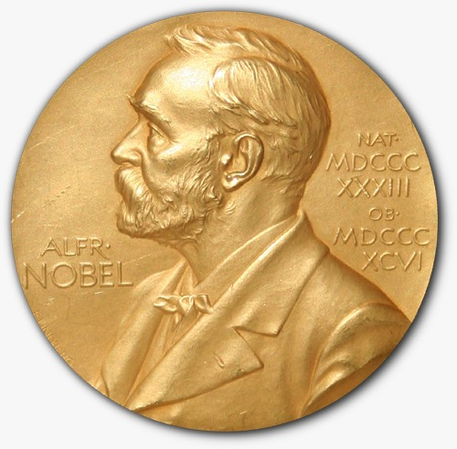

Literally « in vitro » means « in the glass ». This expression indicates that all experiments are done in a test tube which means that they are done outside of a living organism. It might be activity assays conducted on isolated cell lines or tests done on specific proteins. For example, these preliminary studies are essential to caracterize the activity of potential novel drugs on a specific receptor.
THE NOBEL PRICES
According to Nobel's testament, the Nobel price of medecine and physiology rewards, since 1901,
scientists that have brought a real benefit to the humanity thanks to their works.
This
can include both knowledge and technical breakthrough.
Of the 106 Nobel prices
awarded since 1901, 76 are directly linked to results reliying on
animal testing.